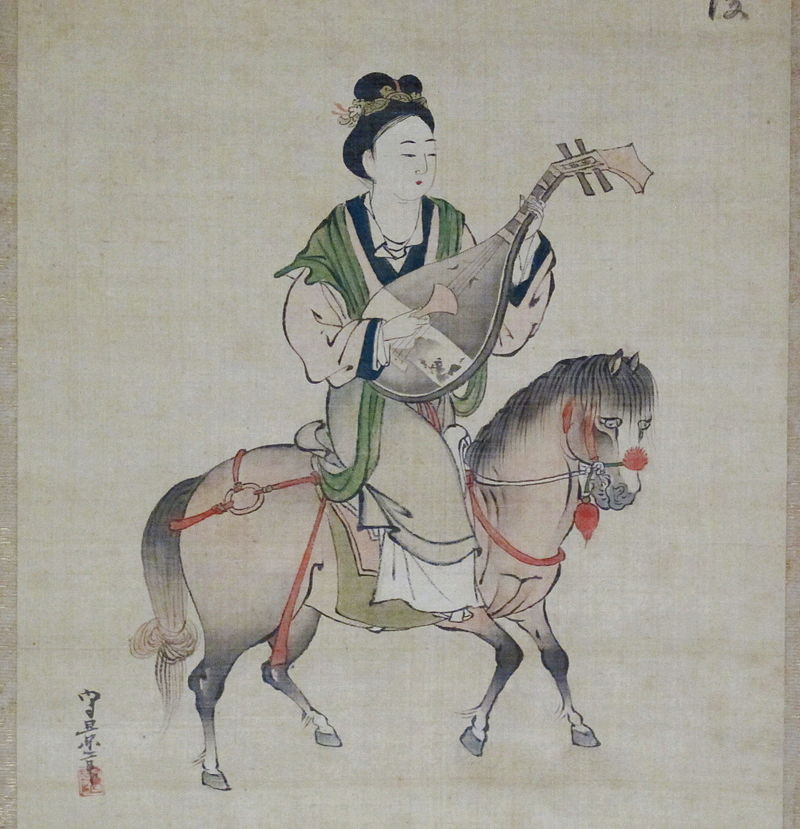

Wang the peddler

A simple man named Wang lived in a village in long ago early Han times. Only a narrow,
rough path led to this village, so merchants, officials, and travelers rarely visited. To sell his charcoal,
Wang knew he must become the traveler, and make the journey to the city.
Wang shouldered his long carrying pole. At each end, swung wide bamboo baskets stacked high with charcoal.
What present would you like me to bring you, he asked his pretty young wife. "A comb!" she cried.
"A beautiful comb like those of the imperial court!"
The combs they used in the country at that time were made of wood.
"A comb like that!" she cried, pointing to the crescent of the golden moon.
After a long trip, Wang arrived safely at the city gates. He sold his charcoal for a good price.
Made bold by the string of cash he now carried, he looked around the city for his wife's present.
The city was so very pretty,
with banners of red and yellow and green and blue hung from shop fronts and balconies.
It was very noisy with the racket of shopmen and shouting buyers.
Wang rubbed his chin. What was it his wife had wanted? He had forgotten!
Perhaps a pair of leather slippers?
Or a warm fur coat? It was getting dark. The shops would soon be closed.
Early in the morning, he had to return to the village.
Suddenly, he noticed the moon. It was round, so very round. She wanted something round,
he thought. He looked in shop after shop for something to make his young wife happy.
Suddenly, he spotted the perfect gift. He wrapped his purchase in a piece of cotton cloth,
and hurried off, with only one bow to the shopkeeper. Wang had bought a mirror.
He did not even know what a mirror was. He only knew that it was round.